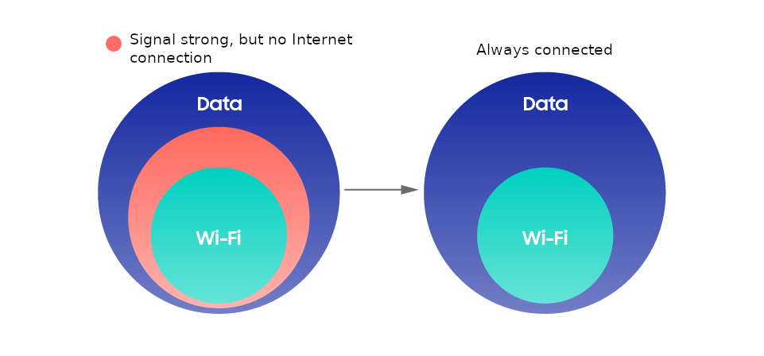
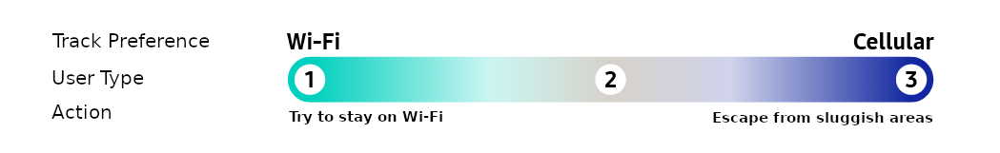
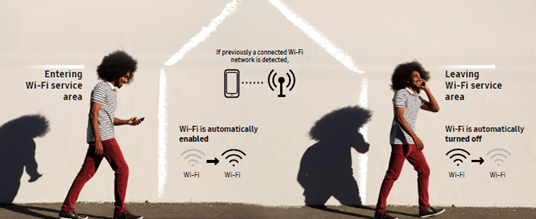
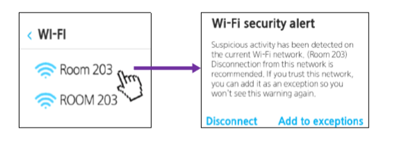
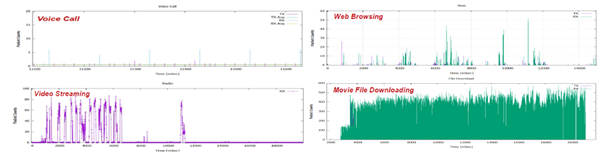
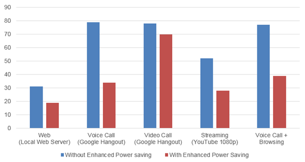

Intelligent Wi-Fi
Last updated July 26th, 2023
Categories:
Intelligent Wi-Fi provides four features that aim to improve consumers’ Wi-Fi experience:
- Network Bearer Switching
- Auto Wi-Fi
- Suspicious Hotspot Detection
- Enhanced Power Saving
Intelligent Wi-Fi is the new brand name of the existing “Adaptive Wi-Fi” which had been applied to models older than Galaxy S10 (e.g. Galaxy S9 or older models). It has been improved by adding a new feature such as Suspicious Network Detection and also enhancing existing features such as Network Bearer Switching.
We care about speed, and we also care about your spending. With more than ten years of experience in Wi-Fi technology on mobile devices, Samsung has been conducting extensive research on features that actually improve the Wi-Fi experience for consumers. As a result, we have identified four main consumer concerns, and developed solutions with artificial intelligence and a mix of other existing technologies:
1. Network Bearer Switching
1-1. Enhanced Gray Area Detection
Consumers are often frustrated when they lose Internet connection or experience very low quality of service (QoS), even when the Wi-Fi signal seems to be strong. This is one of the most commonly reported consumer concerns over using Wi-Fi, the so-called “˜gray areas'.
In 2015, Samsung introduced an industry first — a technology that enables gray area detection and automatic network switching: Switch to Mobile Data (formerly referred to as “˜Smart Network Switch’). Gray areas can occur in a wide range of environments and in multiple forms, and Switch to Mobile Data is the solution for quickly switching from Wi-Fi to a mobile data network when a gray area is encountered.
This new technology, which has been applied to the Galaxy S10 and later models such as the Galaxy Note 10, detects gray areas based on a wider range of technologies available to us, including sensors and artificial intelligence. Sensors collect context information, and artificial intelligence engines then analyze this data to determine the presence of a gray area. Our upgraded version switches networks faster, particularly in the following circumstances:
- Areas with a sudden loss of connection, i.e. in elevators
- Unstable Wi-Fi on moving vehicles, including buses, trains, and subways
Our new software contributes to a significant reduction in Internet disconnections, as shown in the following figure.

1-2. Preference Tracking
Switch to Mobile Data is a technology that automatically switches from a mobile data network to Wi-Fi and vice versa. When we first launched this feature in 2015, it became popular among carriers and users, although some consumers were left unsatisfied. Since the switching criteria was previously based on network performance, it would switch to a mobile data network even when the consumer would have preferred to stay on Wi-Fi.
We have been experimenting with various ways of improving network switching to better fit user preference and network usage patterns. As a result, we have created a new switching technology based on reinforcement learning, which automatically switches networks based on both network quality and user preference.
Our new connection manager will not activate until it has accumulated enough data on user preference. On average, it will track your network usage preferences for approximately 10 days.
*As a result of Galaxy S9 Internal User Trial (2018), it took an average of 9.9 days to determine user preferences.

When it has gathered enough data to determine which of the above types you fall into, it will then initiate the automatic network switching scheme. For instance, if you prefer to conserve your data, the connection manager will remain on Wi-Fi as long as possible. On the contrary, if it detects that you prefer speed above all, it will attempt to switch to a mobile data network as soon as the Wi-Fi coverage begins to drop. If your preferences change over time, our new connection manager will continue to track your actions in order to accommodate your needs.
2. Auto Wi-Fi
People use Wi-Fi differently based on their location. In places where Wi-Fi is available, we turn on Wi-Fi to avoid being charged for mobile data. On the other hand, if Wi-Fi is always on, we are subjected to frequent, unwanted connections and higher power consumption. To solve this problem, we have introduced Auto Wi-Fi, which turns Wi-Fi on and off depending on your location. Auto Wi-Fi addresses these connectivity-related pain points.
Auto Wi-Fi pays close attention to your connection patterns and remembers your favorite networks. It turns your Wi-Fi on when a favorite network is available. When you leave the area and the network becomes unavailable, Auto Wi-Fi will automatically turn off your Wi-Fi.

Auto Wi-Fi uses geofencing (a virtual geological fence based on cellular stations) to detect a user’s location. In registered geofenced areas, “ENTER” and “EXIT” events will be triggered based on location changes detected via the user’s device. Since Auto Wi-Fi is only triggered when these events take place, the device does not have to constantly scan for location, thereby saving battery life. Samsung’s original cell-based geofencing technique allows users to use Auto Wi-Fi without turning GPS on. Samsung’s geofencing technique also incorporates learning algorithms which improves location accuracy over time as users continue to use it.
3. Suspicious Hotspot Detection
One of the most common forms of Wi-Fi attacks is through suspicious hotspots. These hotspots appear on the scan list, often with names (SSIDs) similar to other legitimate access points (APs). In actuality, these hotspots capture all transmitted packets or attempt to manipulate the packets to their advantage.
Offered in the Galaxy S10 and later models such as the Galaxy Note 10, Detect Suspicious Network is a client-based solution that has been designed to protect our customers from these attacks. The technology detects potentially suspicious hotspots by analyzing traffic patterns on a given network. Upon connecting to potentially suspicious APs, an instant warning message will pop up. Since our technology is based on real-time pattern analysis and not databases, it can also detect hotspots that may change their names continuously.

4. Enhanced Power Saving
Wi-Fi data usage on mobile devices has been growing at 67% CAGR, and almost 90% of mobile phone data is consumed over Wi-Fi. The increasing Wi-Fi traffic is generating demand for more advanced power saving techniques to increase battery life. Currently, power saving techniques attempt to reduce power consumption mainly by transferring large data files requiring high-speed throughput, such as movie and video files, through a broadband Wi-Fi network. This, however, may not be suitable for more widely used Wi-Fi applications such as VoIP, Web Browsing, video and audio streaming, live broadcasting, gaming, and SNS.
-
This is because legacy techniques do not consider the real usage of throughput, latency, and bit rate required for various applications and services.
-
To address this problem, intelligent Wi-Fi provides Enhanced Power Saving.
-
Enhanced Power Saving techniques can reduce power consumption while using various data services through Wi-Fi network.
-
It enables lower power consumption by changing the power saving scheme based on real-time traffic pattern analysis during use of various network applications over Wi-Fi.
-
This technique is compatible with WFA-certified APs.
-
In order to minimize current power consumption, the Enhanced Power Saving technology keeps monitoring data traffic patterns and adaptively determines the optimal timing to enter power saving mode and when to wake up without degradation of service quality (i.e. throughput and latency performances). It offers an intelligent, real-time analysis of data transactions over Wi-Fi, including the bit rate, frequency and interval of Tx and Rx packets.

Enhanced Power Saving can reduce power consumption up to 50% - 75% for user applications that utilize a Wi-Fi network.

On this page
Is this page helpful?